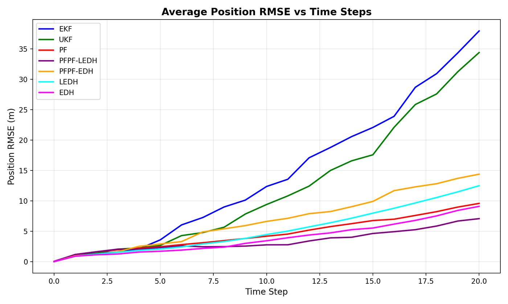
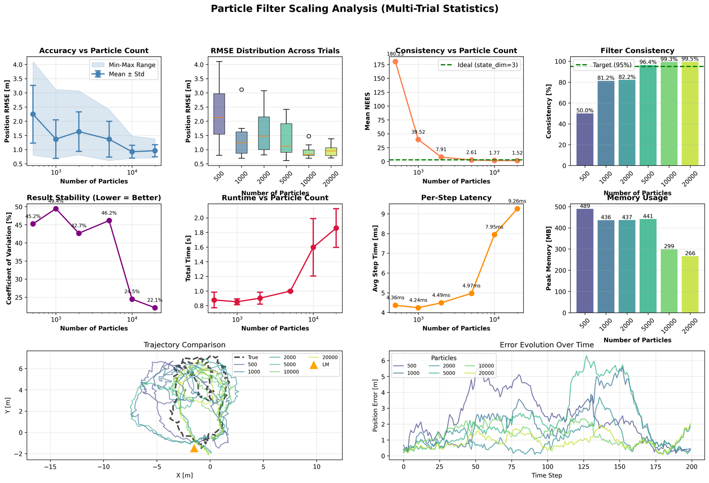

Act 1
Linear-Gaussian Baseline
Kalman filter baselines with Riccati and Joseph covariance updates establish the numerical gold standard.

State Estimation Research Portfolio
This repository benchmarks KF, EKF/UKF, Bootstrap PF, PF-PF, EDH/LEDH, and kernelized particle flow using linear, nonlinear, and high-dimensional experiments with consistency diagnostics and runtime profiling.
Act 1
Kalman filter baselines with Riccati and Joseph covariance updates establish the numerical gold standard.
Act 2
Range-bearing localization pushes EKF/UKF assumptions; NEES diagnostics reveal consistency failures hidden by point-error metrics.

Act 3
PF-PF and EDH/LEDH flows are compared against classical filters on challenging nonlinear tracking tasks.
Metrics are pulled from repository outputs in `reports/`. NEES and memory were not logged for all transport-based runs.
| Method | RMSE (lower is better) | NEES (target ~ 1, lower is better) | Runtime (s, lower is better) | Memory (MB, lower is better) |
|---|---|---|---|---|
| EKF | 1.660 | 40.034 | 0.990 | 450.5 |
| UKF | 1.316 | 6.398 | 1.032 | 452.8 |
| Bootstrap PF | 0.906 | 1.253 | 1.912 | 494.0 |
| PF-PF (LEDH proposal) | 2.492 | n/a | 10.857 | n/a |
| LEDH | 3.543 | n/a | 5.197 | n/a |
| Kernel-PFF (matrix) | 3.322 | n/a | 14.642 | n/a |
Sources: `reports/2_Nonlinear_NonGaussianSSM/EKF_UKF_PF_Comparison/evaluation_results.csv`, `reports/3_Deterministic_Kernel_Flow/Li(17)/summary.txt`, and `reports/3_Deterministic_Kernel_Flow/Filters_Comparison_Diagnostics/experiment_summary.txt`. Comparative framing follows Li (2017) and Hu et al. (2021).
RMSE can look strong while uncertainty is miscalibrated. NEES (Normalized Estimation Error Squared) tests whether the predicted covariance is statistically consistent with observed estimation error.
NEES = (x - x̂)T P-1 (x - x̂)
This is often the metric that differentiates robust Bayesian filtering from overconfident approximations in interviews.
Dimensionality growth exposes the practical trade-off between accuracy and computational cost for particle-family methods.
It improves covariance numerics and positive-definiteness checks, but it is not an automatic RMSE gain.
EKF/UKF can appear acceptable on point-error metrics while failing consistency in nonlinear regimes.
Transport proposals can reduce degeneracy but may impose runtime overhead that must be justified by reliability gains.
High-dimensional behavior often decides what can be used in autonomy, quant inference, and data assimilation pipelines.
Kalman filtering, state-space Bayesian inference, covariance conditioning, and calibration diagnostics.
Particle flow, RKHS kernels, transport proposals, and high-dimensional posterior approximation.
Range-bearing localization, NEES consistency, and real-time filter benchmarking under nonlinearity.
EDH/LEDH transport, dimensional scaling, and non-Gaussian state estimation in scientific systems.
python -m venv .venv
source .venv/bin/activate
pip install -r requirements.txt
python -m src.experiments.exp_part1_lgssm_kf_compare